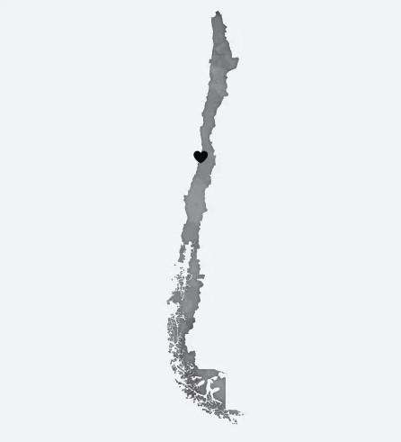
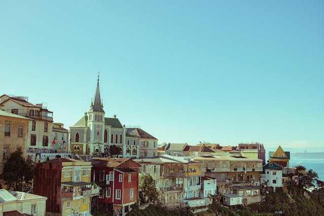

VALPARAÍSO
conozca el encanto entre mar y cerros
Vibrantes calles llenas de arte urbano, miradores con vistas al Pacífico y una arquitectura que
entrelaza lo
antiguo con lo bohemio. Valparaíso te ofrece un tejido urbano
único

Un puerto de historia y cultura viva
Valparaíso, conocida como la "Joya del Pacífico", es un mosaico urbano de casas coloridas esparcidas por sus cerros, conectadas por históricos ascensores. Este puerto, vital desde el siglo XIX, hoy palpita como centro cultural y artístico, adornado por murales que narran historias locales. Su arquitectura fusiona lo antiguo con lo bohemio, creando una atmósfera única donde la historia y la creatividad se entrelazan en cada rincón.
